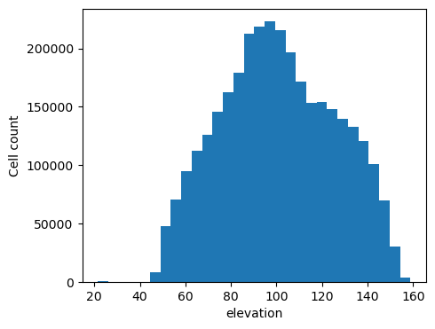
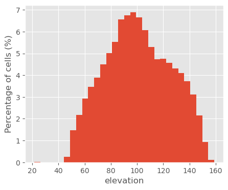
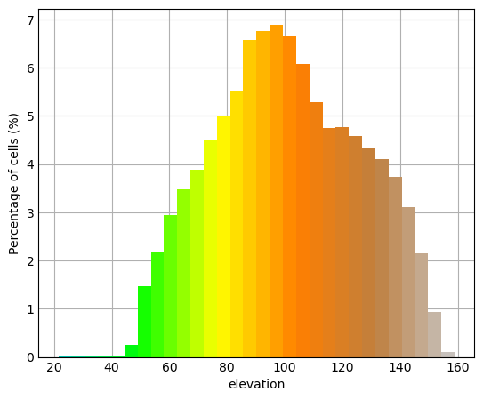
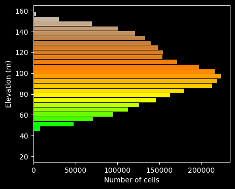

By default, the active Matplotlib style determines the bar color. A single color can be set using a color name, hexadecimal value, or R:G:B triplet. With the -c flag, every bar is assigned the input raster's color at the midpoint of that bin. This mirrors both continuous color ramps and discrete color tables. If both -c and color are given, -c takes precedence. The border_color, border_width, and relative bar width (rwidth) options control the remaining bar appearance.
The histogram can be drawn horizontally (-h), with grid lines along the count axis (-g), rotated value-axis labels (rotate_labels), an optional title, custom x_label and y_label axis labels, and limited value-axis bounds (axis_limits). A Matplotlib style sheet can be applied with the style option, for example style=ggplot. style also accepts the path to a custom .mplstyle file. The background_color option sets the background of both the figure and the plotting area. It accepts color names, hexadecimal values, and R:G:B triplets. Set background_color=transparent to create a transparent background in output formats that support transparency, such as PNG.
By default, the plot is displayed on screen. If output is given, the plot is written to that file. The file format is determined from its extension. The size (plot_dimensions, in inches), resolution (dpi), and fontsize can be set as well.
The histogram is computed with r.stats. Only the aggregated count for each bin is passed to Python, so memory use does not depend on the number of cells in the raster. Integer rasters are converted to a temporary floating-point raster to ensure that values are grouped into the requested number of equal-width bins instead of being reported as individual categories.
For a constant raster, the module draws one bar centered on the single raster value because multiple zero-width bins would overlap.
Matplotlib is required.
The first example draw a histogram of the elevation raster, setting the plot dimensions and DPI.
g.region raster=elevation r.histogram map=elevation plot_dimensions=5,4 \ dpi=100 output=r_histogram_01.png

To change the appearance of the plot, you can tweak individual elements, but also apply a matplotlib style. Below, the ggplot style is used.
r.histogram map=elevation plot_dimensions=5,4 \ dpi=100 frequency=percent style=ggplot \ output=r_histogram_02.png

For a bit more colorfull result, we can draw the histogram with each bar colored based on the corresponding elevation raster color table. And we can express the frequencies as percentages.
r.histogram -c map=elevation plot_dimensions=5,4 \ dpi=100 frequency=percent style=_mpl-gallery \ output=r_histogram_03.png

And one last example, let's draw a horizontal histogram with a grid, a reduced relative bar width, and a dark background:
r.histogram -hg map=elevation plot_dimensions=5,4 \ dpi=100 rwidth=0.9 style=ggplot \ x_label="Number of cells" y_label="Elevation (m)" \ output=r_histogram_04.png
